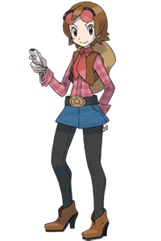

|
6
|
Bienvenue!
|
 |
|
Qu'est-ce que My
Pokémon Ranch?
My Pokémon Ranch est un endroit où les Pokémon et les
Mii peuvent interagir les uns avec les autres grâce à la Wii. Dans
le jeu, le Mii d'un joueur passe du temps avec les Pokémon dans ton
Ranch. Tu peux profiter de la douceur de vivre au Ranch en observant
ton Ranch et ses Pokémon, prendre des photos et les envoyer à tes
amis.
 Voici la personne qui a créé la système Pokémon Ranch pour la Wii. C'est la meilleure amie de Bebe, qui a créé le Pokémon Storage System dans Pokémon Diamond et Pokémon Pearl. Dans My Pokémon Ranch, c'est la propriétaire qui s'occupe du Ranch et des Pokémon. Elle adore les Pokémon et son rêve, c'est de remplir le Ranch de Pokémon. Le Ranch devient de plus en plus
vivant au fur et à mesure que tu y déposes des Pokémon.
Chaque jour, en début de partie, Hayley dépose un Pokémon au Ranch. Tu commences avec un petit Ranch, mais il devient de plus en plus grand au fur et à mesure que le nombre de Pokémon qu'il accueille augmente. Si tu as capturé beaucoup de Pokémon dans Pokémon Diamond ou Pokémon Pearl, tu peux les déposer au Ranch en les transférant depuis ces jeux en utilisant la fonction DS Wireless Communications (Communication sans fil DS) (→p.11)
|

 |
 |
 |